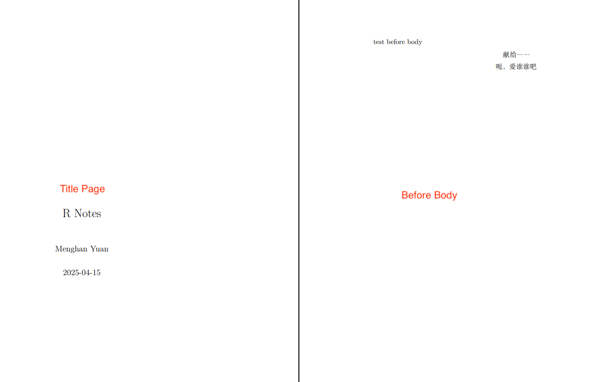

1.1 YAML metadata
Q: What is YAML?
A: YAML is a human-friendly data serialization language for all programming languages. YAML stands for “Yet Another Markup Language.”
Q: What does YAML do?
A: It is placed at the very beginning of the document and is read by each of Pandoc, rmarkdown, and knitr.
- Provide metadata of the document.
- Located at the top of the file.
- Adheres to the YAML format and is delimited by lines containing three three dashes (
---).
YAML are also called header or front matter.
See R Markdown YAML metadata (header) tutorial with examples by hao203 HERE for commonly used YAML metadata (header) in different R Markdown output formats.
There is NO official documentation for R Markdown YAML frontmatter because the YAML frontmatter is a collection of metadata and each individual piece of data might or not be used by a piece of software from your tool chain. That is, the behavior of YAML depends on your user platform.
For instance, the following metadata
editor_options:
chunk_output_type: consoleis used exclusively by RStudio to have the code block output “be shown in the R console instead of inside the source editor”. This option might be ignored by VSCode or Emacs.
YAML can set values of the template variables, such as title, author, and date of the document.
The
outputfield is used by rmarkdown to apply the output format functionrmarkdown::html_document()in the rendering process.There are two types of output formats in the rmarkdown package: documents (e.g.,
pdf_document), and presentations (e.g.,beamer_presentation).Supported output format examples:
html_document,pdf_document.R Markdown documents (
html_documents) and R Notebook documents (html_notebook) are very similar; in fact, an R Notebook document is a special type of R Markdown document. The main difference is using R Markdown document (html_documents) you have to knit (render) the entire document each time you want to preview the document, even if you have made a minor change. However, using an R Notebook document (html_notebook) you can view a preview of the final document without rendering the entire document.Troubleshooting
Issue:
bookdownalways output html, even if specified to pdf.
Cause: If it produces HTML, the output format must have been provided somewhere.
Fix: Check if you have a_output.ymlunder the root directory of your book project. If you do, you may delete it. Then bookdown will use the output field that you specified in the YAML frontmatter of your Rmd document.If there are two output formats,
rmarkdown::render()defaults to use the first output type. If you want another, specify the type, e.g.,rmarkdown::render("0100-RStudio.Rmd", 'pdf_document').
bookdown wrappers of base markdown format
bookdown output formats allow numbering and cross-referencing figures/tables/equations. It takes the format html_document2, in general, markdown_document2 is a wrapper for the base format markdown_document. With the bookdown output format, you can cross-reference sections by their ID’s using the same syntax when sections are numbered.
Other bookdown output format examples for single documents: pdf_document2, beamer_presentation2, tufte_html2, word_document2. See Page 12 of the reference manual for a complete list of supported formats by bookdown.
What bookdown is very powerful for is that it compiles books. Book formats:
- HTML:
gitbookhtml_booktufte_html_book
- PDF:
pdf_book
- e-book:
epub_book
Many aspects of the LaTeX template used to create PDF documents can be customized using top-level YAML metadata (note that these options do NOT appear underneath the
outputsection, but rather appear at the top level along withtitle,author, and so on). For example:A few available metadata variables are displayed in the following (consult the Pandoc manual for the full list):
Top-level YAML Variable Description langDocument language code fontsizeFont size (e.g., 10pt,11pt, or12pt)papersizeDefines the paper size (e.g., a4paper,letterpaper)documentclassLaTeX document class (e.g., article,book, andreport)classoptionA list of options to be passed to the document class, e.g., you can create a two-column document with the twocolumnoption.geometryOptions for geometrypackage (e.g.,margin=1inset all margins to be 1 inch)mainfont,sansfont,monofont,mathfontDocument fonts (works only with xelatexandlualatex)linkcolor,urlcolor,citecolorColor for internal links (cross references), external links (link to websites), and citation links (bibliography) linestretchOptions for line spacing (e.g. 1, 1.5, 3). Pandoc User’s Guide: https://www.uv.es/wiki/pandoc_manual_2.7.3.wiki?21
classoptiononecolumn,twocolumn- Instructs LaTeX to typeset the document in one column or two columns.twoside,oneside: Specifies whether double or single sided output should be generated. The classes’ article and report are single sided and the book class is double sided by default.Note that this option concerns the style of the document only. The option two side does NOT tell the printer you use that it should actually make a two-sided printout.
The difference between single-sided and double-sided documents in LaTeX lies in the layout of the page margins and the orientation of the text on the page.
Single-sided documents are printed on only one side of the page, with the text and images aligned to the right-hand side of the page. This type of layout is often used for brochures, flyers, and other types of promotional materials.
Double-sided documents are printed on both sides of the page, with the text and images alternating between right-hand and left-hand margins. This type of layout is often used for books, reports, and other types of long-form documents.
A
twosidedocument has different margins and headers/footers for odd and even pages.
The layout of a
twosidebookQ: Why Inner margin is narrow?
A: The reason for this is that with two pages side by side, you actually have only THREE margins - the left, right and middle. The middle margin is made up from the inside margins of both pages, and so these are smaller because they add together to make the middle margin. If they were bigger, then you would end up with too much whitespace in the middle.o - outside margin i - inside margin b - binding offset Before binding: ------------------ ----------------- |oooo|~~~~~~|ii|b| | | |~~~~~~| | | |~~~~~~| | | | | |~~~~~~| | | |~~~~~~| | | | | |~~~~~~| | | |~~~~~~| | | | | |~~~~~~| | | |~~~~~~| | | | | |~~~~~~| | | |~~~~~~| | | | | |~~~~~~| | ------------------ ----------------- After binding: ------------------------------- |oooo|~~~~~~|ii|ii|~~~~~~|oooo| |oooo|~~~~~~|ii|ii|~~~~~~|oooo| |oooo|~~~~~~|ii|ii|~~~~~~|oooo| |oooo|~~~~~~|ii|ii|~~~~~~|oooo| |oooo|~~~~~~|ii|ii|~~~~~~|oooo| |oooo|~~~~~~|ii|ii|~~~~~~|oooo| -------------------------------landscape- Changes the layout of the document to print in landscape mode.openright,openany- Makes chapters begin either only on right hand pages or on the next page available. This does not work with the article class, as it does not know about chapters. The report class by default starts chapters on the next page available and the book class starts them on right hand pages.
In PDFs, you can use code, typesetting commands (e.g.,
\vspace{12pt}), and specific packages from LaTeX.The
header-includesoption loads LaTeX packages.Note that
header-includesis a top-level option that align withoutput.
--- output: pdf_document header-includes: - \usepackage{fancyhdr} --- \pagestyle{fancy} \fancyhead[LE,RO]{Holly Zaharchuk} \fancyhead[LO,RE]{PSY 508} # Problem Set 12- Chinese/Japanese support
- Alternatively, use
extra_dependenciesto list a character vector of LaTeX packages. This is useful if you need to load multiple packages:
If you need to specify options when loading the package, you can add a second-level to the list and provide the options as a list:
--- title: "Untitled" output: pdf_document: extra_dependencies: caption: ["labelfont={bf}"] hyperref: ["unicode=true", "breaklinks=true"] lmodern: null ---Here are some examples of LaTeX packages you could consider using within your report:
Some output options are passed to Pandoc, such as
toc,toc_depth, andnumber_sections. You should consult the Pandoc documentation when in doubt.keep_tex: trueif you want to keep intermediate TeX. Easy to debug. Defaults tofalse.
To learn which arguments a format takes, read the format’s help page in R, e.g.
?html_document.
Parameters
We can include variables and R expressions in this header that can be referenced throughout our R Markdown document. For example, the following header defines start_date and end_date parameters, which will be reflected in a list called params later in the R Markdown document.
---
title: My RMarkdown
author: Yihui Xie
output: html_document
params:
start_date: '2020-01-01'
end_date: '2020-06-01'
---To access a parameter in our R code, call params$<parameter name>, e.g., params$start_date and params$end_date.
Should I use quotes to surround the values?
- Whenever applicable use the unquoted style since it is the most readable.
- Use quotes when the value can be misinterpreted as a data type or the value contains a
:.
# values need quotes
foo: '{{ bar }}' # need quotes to avoid interpreting as `dict` object
foo: '123' # need quote to avoid interpreting as `int` object
foo: 'yes' # avoid interpreting as `boolean` object
foo: "bar:baz:bam" # has colon, can be misinterpreted as key
# values need not quotes
foo: bar1baz234
bar: 123bazref:
Some aspects of markdown output can be customized via global, project, or file-level options, including:
- How to wrap / break lines (fixed column, sentence-per-line, etc.).
- Where to write footnotes (below the current paragraph or section, or at the end of the document).
- Whether to use the visual mode markdown writer when saving markdown from source mode (to ensure consistency between documents saved from either mode).
Global and project options that affect the way markdown is written can also be customized on a per-file basis. These file specific options can be set using YAML. For instance, you want to set lines wrapping after 72 characters:
1.1.1 Render Rmd
When you click the Knit button (⇧⌘K) in RStudio, generally two processes happen:
- The
.Rmdfile is fed toknitr, which executes all of the R code chunks and creates a new markdown (.md) document which includes the R code and its output. - The
.mdfile is then processed by pandoc which is responsible for creating the finished format, e.g., HTML, PDF, MS_Word..mdfiles can be directly converted to html, but.mdto pdf is time-consuming. It first generates.tex, then call the LaTeX engine to convert to pdf.

There is one function that can do the processes mentioned above: rmarkdown::render.
rmarkdown::render(input, output_format = NULL, output_file = NULL, output_dir = NULL, output_options = NULL, output_yaml = NULL)
| Arguments | Definition |
|---|---|
output_format |
- "all" will render all formats define within the file- Name of a format, e.g., html_document, will render to that single format- An output format object, e.g., html_document(toc = TRUE, toc_depth = 2, includes = includes(before_body = "header.htm")), where you can pass on the argument |
output_options |
- List of output options that can override the options specified in metadata (e.g could be used to force self_contained or mathjax = "local"). - Note that this is only valid when the output format is read from metadata (i.e. not a custom format object passed to output_format). - output_options cannot work together with xxx_document(). |
output_yaml |
Paths to YAML files specifying output formats and their configurations. The first existing one is used. If none are found, then the function searches YAML files specified to the output_yaml top-level parameter in the YAML front matter, _output.yml or _output.yaml, and then uses the first existing one. |
Use examples of render, using output format objects
rmarkdown::render("0208-Rmd-GHpage.Rmd",
bookdown::pdf_document2(
latex_engine = "xelatex",
template = "latex/template.tex",
includes = includes(
in_header = "latex/preamble.tex",
before_body = "latex/before_body.tex")
))
# This does NOT work as `output_options` is only valid when the format is not an output format object "xxx_document()"
rmarkdown::render("0208-Rmd-GHpage.Rmd",
bookdown::pdf_document2(
latex_engine = "xelatex",
template = "latex/template.tex"),
output_options = list(
includes = includes(
in_header = "latex/preamble.tex",
before_body = "latex/before_body.tex")
))
# render to html
rmarkdown::render("AR_application.Rmd", bookdown::html_document2())Note that sometimes the bookdown cross references in Rmd are not rendered when using the Knit button. The rendered html shows Fig. \@ref(fig:ar-res) (without the backslash). In this case, using rmarkdown::render() with output_format = bookdown::html_document2() might help.
You can have more than one output formats for your Rmd. For example, you want both the html and pdf output.
When you render the Rmd with rmarkdown::render(), it will use the first output format you specify in the YAML metadata (if it is missing, the default is html_document).
If you do not want to use the first one, you can specify the one you want in the second argument, e.g., for an Rmd document input.Rmd with the metadata:
You can render it to PDF via:
# Render to pdf
rmarkdown::render('input.Rmd', 'pdf_document')
# Render multiple formats
render("input.Rmd", c("html_document", "pdf_document"))
# Render all formats defined
rmarkdown::render('input.Rmd', 'all')RStudio calls the function
rmarkdown::render()to render the document in a new R session.RStudio does this to ensure reproducibility.
rmarkdown::render_site(input = ".", output_format = "all",) Render all of the R Markdown documents within a directory as a website. There are two requirements for a directory to be rendered as a website:
- It must contain either an
index.Rmdorindex.mdfile. - It must contain a site configuration file (
_site.yml).
Note that the “Knit” button in RStudio uses rmarkdown::render_site to knit the file in presence of an index.Rmd file in the working directory.
1.1.2 Document dependency
By default, R Markdown produces standalone HTML files with no external dependencies, using data:URIs to incorporate the contents of linked scripts, stylesheets, images, and videos. This means you can share or publish the file just like you share Office documents or PDFs. If you would rather keep dependencies in external files, you can specify self_contained: false.
Note that even for self-contained documents, MathJax is still loaded externally (this is necessary because of its big size). If you want to serve MathJax locally, you should specify mathjax: local and self_contained: false.
One common reason to keep dependencies external is for serving R Markdown documents from a website (external dependencies can be cached separately by browsers, leading to faster page load times). In the case of serving multiple R Markdown documents you may also want to consolidate dependent library files (e.g. Bootstrap, and MathJax, etc.) into a single directory shared by multiple documents. You can use the lib_dir option to do this. For example:
Loading LaTeX packages
We can load additional LaTeX packages using the extra_dependencies option within the pdf_document YAML settings.
This allows us to provide a list of LaTeX packages to be loaded in the intermediate LaTeX output document, e.g.,
---
title: "Using more LaTeX packages"
output:
pdf_document:
extra_dependencies: ["bbm", "threeparttable"]
---If you need to specify options when loading the package, you can add a sub-level to the list and provide the options as a list, e.g.,
output:
pdf_document:
extra_dependencies:
caption: ["labelfont={bf}"]
hyperref: ["unicode=true", "breaklinks=true"]
lmodern: nullFor those familiar with LaTeX, this is equivalent to the following LaTeX code:
\usepackage[labelfont={bf}]{caption}
\usepackage[unicode=true, breaklinks=true]{hyperref}
\usepackage{lmodern}The advantage of using the extra_dependencies argument over the includes argument introduced in Section 6.1 is that you do not need to include an external file, so your Rmd document can be self-contained.
Includes
HTML Output
You can do more advanced customization of output by including additional HTML content or by replacing the core Pandoc template entirely. To include content in the document header or before/after the document body, you use the includes option as follows:
---
title: "Habits"
output:
html_document:
includes:
in_header: header.html # inject CSS and JavaScript code into the <head> tag
before_body: doc_prefix.html # include a header that shows a banner or logo.
after_body: doc_suffix.html # include a footer
template: template.html # custom templates
---An example header.html to load a MathJax extension textmacros.
<script type="text/x-mathjax-config">
MathJax.Hub.Config({
loader: {load: ['[tex]/textmacros']},
tex: {packages: {'[+]': ['textmacros']}}
});
</script>PDF Output
For example, to support Chinese characters.
You can use includes and preamble.tex (can be any name, contains any pre-loaded latex code you want to run before your main text code, for setting up environment, loading pkgs, define new commands … Very flexible.)
In the main Rmd:
---
output:
pdf_document:
includes:
in_header: latex/preamble.tex
before_body: latex/before_body.tex
after_body: latex/after_body.tex
---If you want to add anything to the preamble, you have to use the includes option of pdf_document. This option has three sub-options:
in_header: loading necessary packagesbefore_body:- Styling that has the highest priority (as it will be loaded latest; if you put in
in_header, it might be overridden by default settings) - Dedication page like “The books is dedicated to …” (此书献给…)
An example of
before_body.tex:% Styling that has the highest priority \let\tightlist\relax % disable `\tightlist` \setlength{\abovedisplayskip}{-5pt} \setlength{\abovedisplayshortskip}{-5pt} % book dedication page \thispagestyle{empty} \begin{center} 献给…… 呃，爱谁谁吧 \end{center}The default bookdown uses
\tightlistfor all bullet lists, settingitemsep=0ptandparskip=0pt, aim for “compact lists.” See the following definition:I personally don’t like the compact list setting, so I disable it with
\let\tightlist\relax. To prevent it from being overridden, I put it inbefore_body.texinstead ofpreamble.tex.- Styling that has the highest priority (as it will be loaded latest; if you put in
after_body.
Each of them takes one or multiple file paths. The file(s) specified in in_header will be added to the preamble. The files specified in before_body and after_body are added before and after the document body, respectively.
\documentclass{article}
% preamble
\begin{document}
% before_body
% body
% after_body
\end{document}
In preamble.tex:
Alternatively, you can use header-includes but with less flexibility to change options:
Q: includes vs. header-includes, which one is better to use for loading LaTeX packages?
A: Another way to add code to the preamble is to pass it directly to the header-includes field in the YAML frontmatter. The advantage of using header-includesis that you can keep everything in one R Markdown document.
However, if your report is to be generated in multiple output formats, we still recommend that you use the includes method, because the header-includes field is unconditional, and will be included in non-LaTeX output documents, too. By comparison, the includes option is only applied to the pdf_document format.
Ref:
https://github.com/hao203/rmarkdown-YAML?tab=readme-ov-file#chinesejapanese-support
https://bookdown.org/yihui/rmarkdown-cookbook/latex-preamble.html
header-includes
Tex style and package loading can also put in header-includes.
Ex.1
---
output: pdf_document
header-includes:
- \usepackage{fancyhdr}
- \pagestyle{fancy}
- \usepackage{ctex} #TeX package for Chinese
- \fancyhead[L]{MANUSCRIPT AUTHORS}
- \fancyhead[R]{MANUSCRIPT SHORT TITLE}
- \usepackage{lineno} # TeX package for line numbers
- \linenumbers
---Ex.2
---
title: Adding a Logo to LaTeX Title
author: Michael Harper
date: December 7th, 2018
output: pdf_document
header-includes:
- \usepackage{titling}
- \pretitle{\begin{center}
\includegraphics[width=2in,height=2in]{logo.jpg}\LARGE\\}
- \posttitle{\end{center}}
---Ex.3
To override or extend some CSS for just one document, include for example:
---
output: html_document
header-includes: |
<style>
blockquote {
font-style: italic;
}
tr.even {
background-color: #f0f0f0;
}
td, th {
padding: 0.5em 2em 0.5em 0.5em;
}
tbody {
border-bottom: none;
}
</style>
---Change Font
The default font is \usepackage{lmodern} in bookdown.
Can specify alternative fonts in preamble.tex as follows:
Fonts known to LuaTeX or XeTEX may be loaded by their standard names as you’d speak them out loud, such as Times New Roman or Adobe Garamond. ‘Known to’ in this case generally means ‘exists in a standard fonts location’ such as ~/Library/Fonts on macOS, or C:\Windows\Fonts on Windows. In LuaTEX, fonts found in the TEXMF tree can also be loaded by name. In XeTEX, fonts found in the TEXMF tree can be loaded in Windows and Linux, but not on macOS.